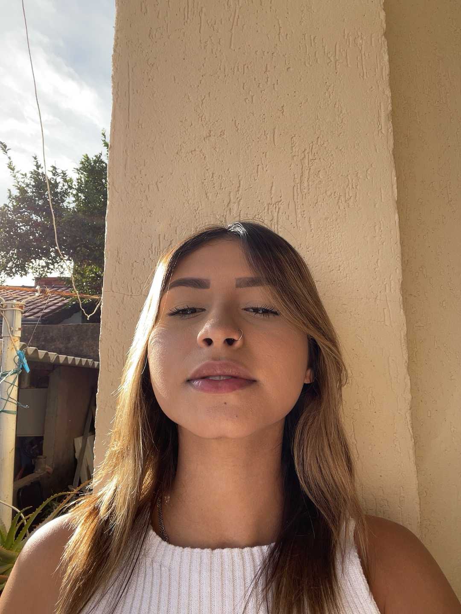
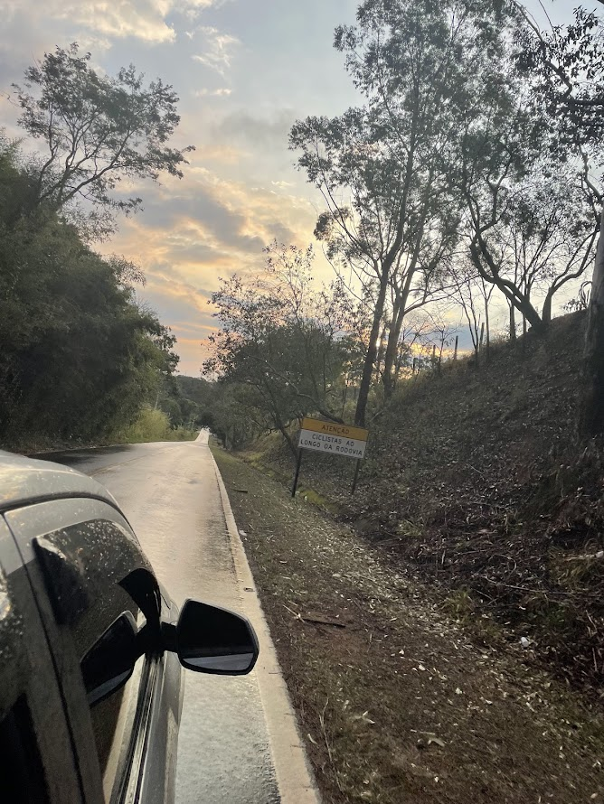
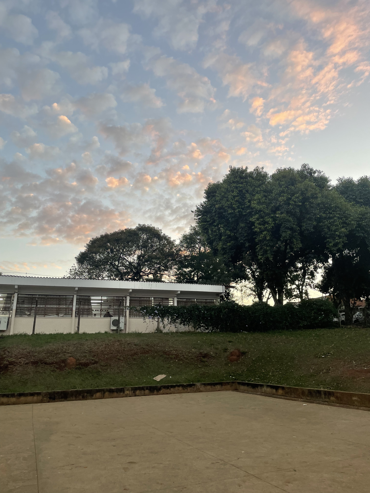
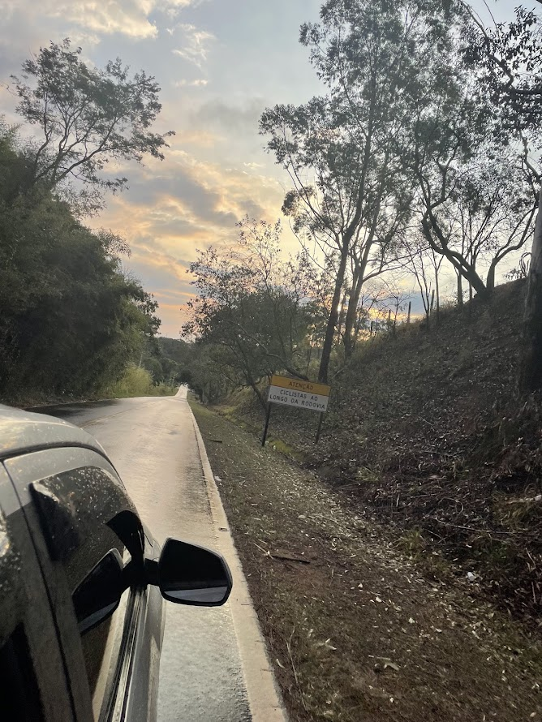
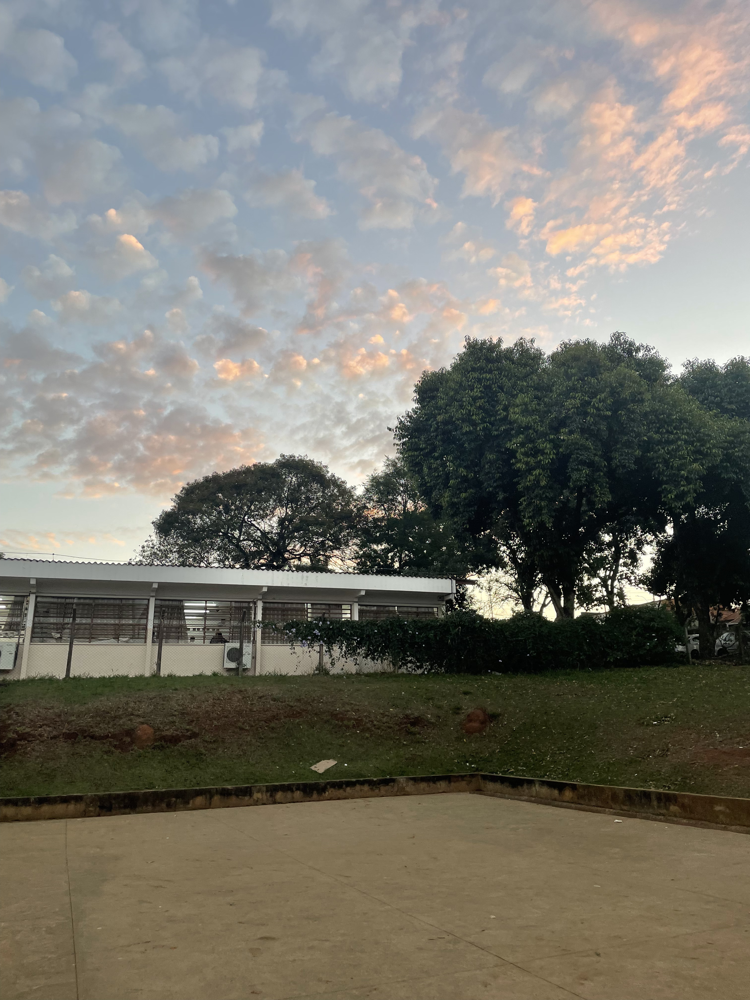
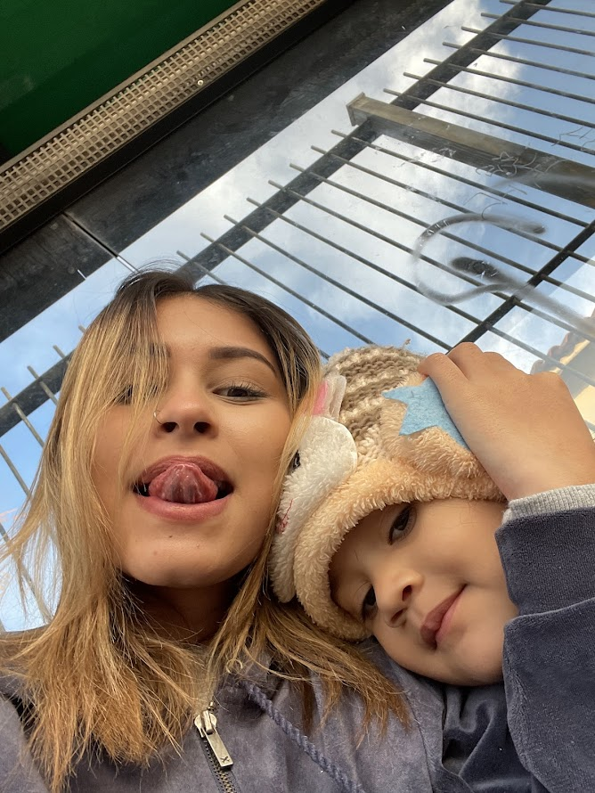

Portifólio Pessoal

Sobre mim
Nome: Isabella Vitória Silva de Souza
Número para contato:(19)992684286
Gmail: Isahvitoriahss@gmail.com
Sobre mim
- Possuo 17 anos.
- Gosto de viajar.
- Sempre estou disposta para aprender algo novo.
- Espero desenvolver minhas habilidades.
- Ofereço muita dedicação.
- Tenho bom desenvolvimento em trabalhos em equipe.
- Sou comunicativa.

Formação Acaêmica
- Estou cursando o segundo ano do ensino médio no período integral, Escola Estadual Nucleo habitacional José Paulino Nogueira .

Formação Continuada
- Curso Senai, Desenvolvimento Java Escript .

- Possuo 17 anos.
- Gosto de viajar.
- Sempre estou disposta para aprender algo novo.
- Espero desenvolver minhas habilidades.
- Ofereço muita dedicação.
- Tenho bom desenvolvimento em trabalhos em equipe.
- Sou comunicativa.

- Estou cursando o segundo ano do ensino médio no período integral, Escola Estadual Nucleo habitacional José Paulino Nogueira .

- Curso Senai, Desenvolvimento Java Escript .
Atividades Extra Curriculares
Curiosidades Sobre mim
- Moro em Paulínia-sp
- Gosto de crianças.
- Sempre do o meu melhor quanto na vida pessoal,quanto na profissional.
- Sou bastante proativa, não gosto de depender de outras pessoas.
- Procuro evoluir cada vez mais.
- Tenho a mente aberta,para novos conhecimentos e experiência.

Criadores do site
Este site foi produzido por alunos no curso de Desenvolvimento JV do SENAI.
© 2024 Produzido por Isabella Vitória Silva de Souza.Todos os direitos reservados.